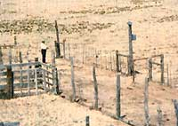

Esquipula Chavez, governor of Sandia Pueblo, New Mexico, near the center of his nine- paddock cell. The corridor around the cell keeps cattle from loitering near the water troughs. Separating pens and loading facilities are located within the corridor.